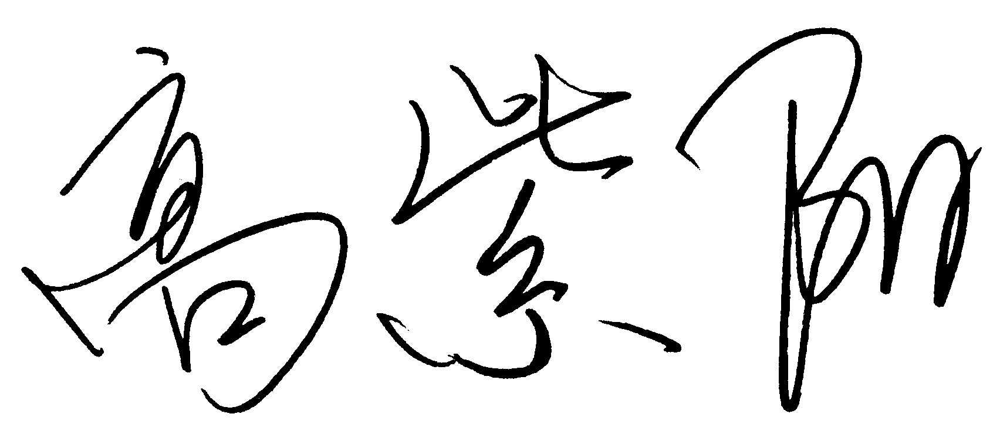
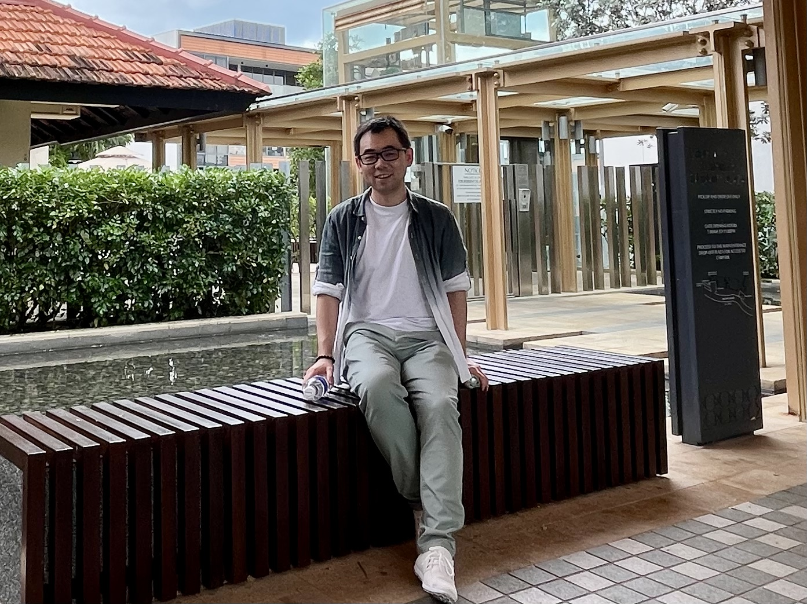

|
Ziyang Gao
 Professor, Department of Mathematics, UCLA Email: ziyang.gao AT math.ucla.edu Office: MS 6925. Mailing Address: UCLA Department of Mathematics, 520 Portola Plaza, Box 951555, Los Angeles, CA 90095-1555. |
 |
Research Interests
My research interests focus on arithmetic geometry. I work on Shimura varieties (both pure and mixed), abelian varieties, cycles, height theory (including the Beilinson-Bloch height), adelic line bundles, and diophantine geometry.Grants
My research was supported by ERC-Starting-Grant n. 945714 UnIntUniBd (09/2020-08/2025, early termination 09/2024).Upcoming events that I coorganize
Publications and preprints
The documents here may be slightly different from the published versions.- (with Emmanuel Ullmo) Hodge cycles and quadratic relations between holomorphic periods on CM abelian varieties, preprint 2024.
- (with Shouwu Zhang) Heights and periods of algebraic cycles in families, preprint 2024.
- Compte-rendu: Bigness of the tautological line bundle and degeneracy loci in families of abelian varieties, 2024.
- (with Emmanuel Ullmo and Andrei Yafaev) Bi-Q -structure on Hermitian symmetric spaces and quadratic relations between CM periods, preprint 2024.
- (with Philipp Habegger) The Relative Manin-Mumford Conjecture, preprint 2023.
- (with Philipp Habegger) Degeneracy loci in the universal family of abelian varieties, accepted to Journal of Number Theory (JNT Prime), Proceedings of the Second JNT Biennial Conference 2022, online 2024, doi.org/10.1016/j.jnt.2024.05.015.
- (with Tangli Ge and Lars Kühne) The Uniform Mordell-Lang Conjecture, preprint 2021.
- Survey: Recent developments of the Uniform Mordell-Lang Conjecture, preprint 2021.
- (with Bruno Klingler) The Ax-Schanuel conjecture for variations of mixed Hodge structures, Math. Ann., vol. 388, p. 3847-3895, 2024 (published online in 2023).
- (with Vesselin Dimitrov and Philipp Habegger) A consequence of the relative Bogomolov conjecture, Journal of Number Theory (JNT Prime), vol. 230 (Proceedings of the First JNT Biennial Conference 2019), p. 146-160, 2022.
- (with Vesselin Dimitrov and Philipp Habegger) Uniformity in Mordell-Lang for curves, Annals of Mathematics, vol. 194, p. 237-298, 2021.
- (with Vesselin Dimitrov and Philipp Habegger) Uniform bound for the number of rational points on a pencil of curves, IMRN, vol. 2021, p. 1138-1159, 2021 (published online in December 2019), doi.org/10.1093/imrn/rnz248.
- Generic rank of Betti map and unlikely intersections, Compositio Mathematica, vol. 156, p. 2469-2509, 2020. Erratum
- (with Serge Cantat, Philipp Habegger and Junyi Xie) The Geometric Bogomolov Conjecture, Duke Math. J., vol. 170, p. 247-277, 2021. doi:10.1215/00127094-2020-0044.
- Mixed Ax-Schanuel for the universal abelian varieties and some applications, Compositio Mathematica, vol. 156, p. 2263-2297, 2020.
- (with Rafael von Känel and Lucia Mocz) Faltings Heights and L-functions, in Arithmetic and Geometry: Ten Years in Alpbach edited by Gisbert Wüstholz and Clemens Fuchs, Annals of Mathematics Studies 202, Princeton U. Press.
- Appendix to The Betti map associated to a section of an abelian scheme (Yves André, Pietro Corvaja and Umberto Zannier), Inventiones mathematicae, vol. 222, pp. 161-202, 2020.
- (with Philipp Habegger) Heights in families of abelian varieties and the Geometric Bogomolov Conjecture, Annals of Mathematics, vol. 189, p. 527-604, 2019.
- Panorama on Ax type transcendence results, Proceedings of the 7th International Congress of Chinese Mathematicians, vol. II, p. 33-52, International Press of Boston, 2019.
-
Enlarged mixed Shimura varieties, bi-algebraic system and some Ax type transcendental results, Forum of Mathematics, Sigma, vol. 7, 2019, e16,
doi.
- Bi-algebraic system on the universal vectorial extension Oberwolfach report No. 21, 2016. - About the mixed André-Oort conjecture: reduction to a lower bound for the pure case, Comptes rendus Mathématiques, vol. 354, p. 659-663, 2016.
- A special point problem of André-Pink-Zannier in the universal family of abelian varieties, Ann. Sc. Norm. Super. Pisa Cl. Sci., vol. XVII, p. 231-266, 2017.
- Towards the André-Oort conjecture for mixed Shimura varieties: the Ax-Lindemann theorem and lower bounds for Galois orbits of special points, Journal für die reine und angewandte Mathematik (Crelle), vol. 732, p. 85-146, 2017 (published online in March 2015).
Miscellaneous
Dissertations
- HDR (Habilitation à diriger les recherches) defense on June 28, 2021 Distribution of points on varieties: various aspects and interactions. Here are the slides.
- PhD thesis The mixed Ax-Lindemann theorem and its applications to the Zilber-Pink conjecture. Supervisors: Emmanuel Ullmo and Bas Edixhoven.
Teaching
- 207C Spring 2025: An Introduction to Arakelov Geometry. Chapter 0, Chapter 1, Chapter 2, Chapter 3, Chapter 4.
- Participating Number Theory Seminar: Mordell Conjecture, after Faltings 1983. Winter and Spring 2025.
- Click here for past courses.